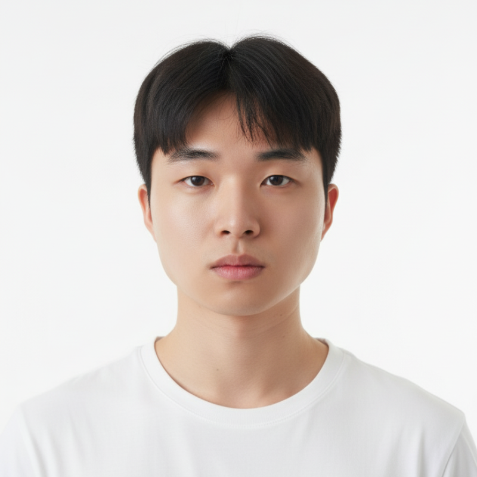

2025 - Present
Seoul National University
Ph.D. in Data Science, Graduate School of Data Science
Ph.D. Student, Graduate School of Data Science, Seoul National University

I am interested in developing methods for understanding the internal mechanisms of language models, and using those insights to improve practical NLP and LLM applications.
Ph.D. in Data Science, Graduate School of Data Science
B.A. in Linguistics and Data Science for Humanities
arXiv preprint, 2026
Yunho Choi*, Jongwon Lim*, Woojin Ahn, Minjae Oh, Jeonghoon Shim, Yohan Jo
POISE estimates RLVR baselines from the actor's internal hidden states and entropy statistics, reducing rollout overhead while matching DAPO-level performance.
ICML 2026 Regular Paper; Mechanistic Interpretability Workshop @ NeurIPS 2025
Jongwook Han*, Jongwon Lim*, Injin Kong, Yohan Jo
Mechanistic analysis of how language models internally represent and express values under intrinsic and prompted settings.
ACL Findings 2026
Sejun Park, Yoonah Park, Jongwon Lim, Yohan Jo
Context-aware user profiling framework for retrieving persuasion-relevant history and generating user profiles for persuasiveness prediction.
FEVER Workshop @ EMNLP 2024
Jean Seo, Jongwon Lim, Dongjun Jang, Hyopil Shin
Biomedical benchmark and automated evaluation pipeline for factuality assessment in long-form LLM outputs.
Worked on language model training and evaluation, retrieval-augmented generation, experiments, analysis, and academic writing.
Led work on a benchmark dataset for evaluating morphological capabilities of large language models.
Built ensemble systems for detecting AI-generated text.
Seoul National University.
Mentored student participants on AI projects and research-oriented problem solving.
Pluralistic Alignment Workshop @ ICML 2026; Mechanistic Interpretability Workshop @ ICML 2026; 3rd AI for Math Workshop @ ICML 2026.
National Research Foundation of Korea
SNU Linguistics Department. Topic: Evaluating the Understanding of Blend Morphology in Large Language Models.
Instructor for armored vehicle operation at the Republic of Korea Army Armor School.
Last updated: May 2026